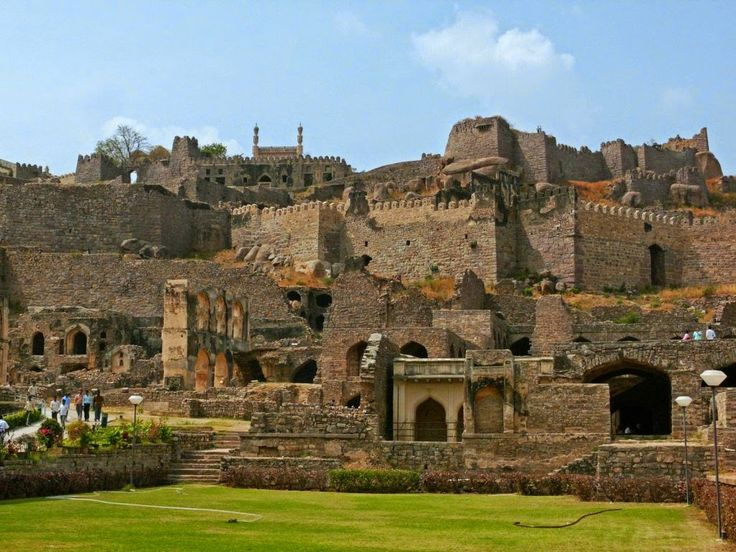

Telangana, a state in southern India, boasts a rich cultural heritage that blends traditional customs with modern influences. The people of Telangana are known for their hospitality, warmth, and strong community ties. The state's culture is deeply rooted in its art forms, music, and dance, with classical dance forms like Kuchipudi and Perini, and folk traditions such as Bathukamma and Kolatam being prominent. The language spoken is Telugu, and the region is famous for its distinct dialects and literature.
Festivals hold a significant place in the lives of Telangana's people. Bathukamma, a floral festival celebrated in honor of Goddess Gauri, is one of the most vibrant and widely celebrated festivals, where women gather to make beautiful flower arrangements and celebrate together. Other major festivals include Bonalu, a traditional folk festival dedicated to Goddess Mahakali, and Ugadi, the Telugu New Year, celebrated with great fervor. Diwali, Sankranti, and Christmas are also celebrated with much enthusiasm across the state.
The cuisine of Telangana is known for its bold and spicy flavors, often incorporating rice, pulses, and vegetables. Signature dishes include Hyderabadi Biryani, a fragrant rice dish cooked with marinated meat and saffron, and Sarva Pindi, a crispy rice flour pancake. Pesarattu, a savory green gram pancake, and Mirchi ka Salan, a spicy chili curry, are also popular. Telangana is also famous for its sweets like Qubani ka Meetha (apricot dessert) and Pootharekulu (sweetened rice paper). The food is known for its liberal use of tamarind, chilies, and sesame.
Telangana is home to numerous tourist attractions, blending natural beauty with historical landmarks. The capital city, Hyderabad, is renowned for its iconic Charminar and the majestic Golconda Fort. The Ramoji Film City, one of the largest film studio complexes in the world, attracts visitors interested in film and entertainment. Warangal, with its historic fort and temples, and Pochampally, known for its handwoven textiles, are also popular tourist spots. For nature lovers, Ethipothala Falls and Kunduru Forest offer scenic landscapes, while Nehru Zoological Park in Hyderabad provides a family-friendly outing.